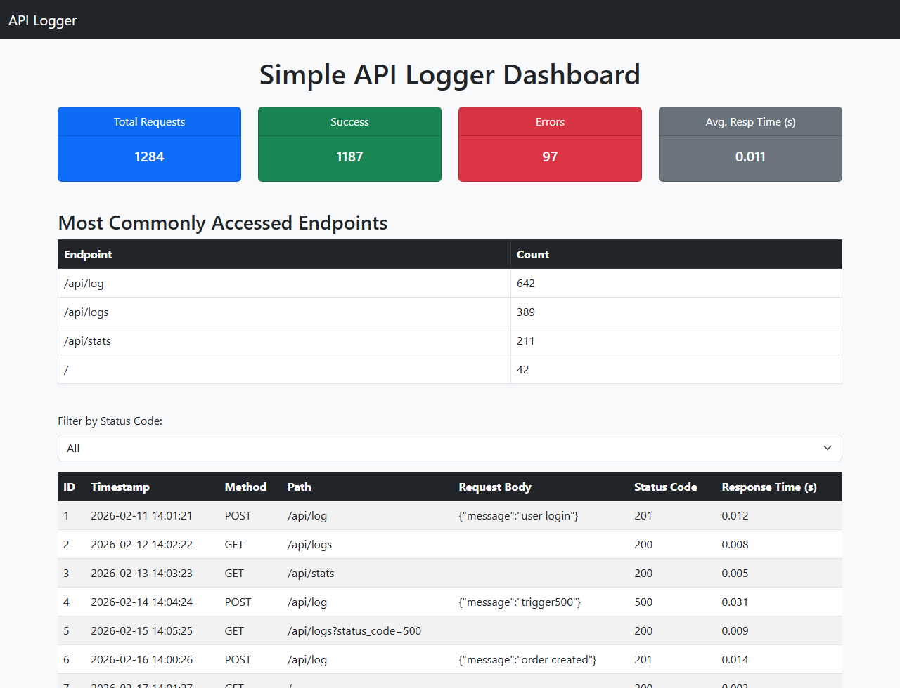

The project's own dashboard template and JavaScript, rendered with sample log data.
Overview
A lightweight REST service that logs every request passing through it and renders the results on a live dashboard. Custom middleware captures the method, URL, body, status code and response time of each call, storing them in SQLite.
It includes a deliberate failure switch: posting a message of trigger500 causes a division by zero, so error handling and error logging can be exercised on demand rather than hoped about.
What it does
- POST /api/log to record an entry, GET /api/logs with status and limit filters, GET /api/stats for analytics
- Statistics cover total requests, 2xx versus error counts, average response time and most-hit endpoints
- Custom ASGI middleware captures every request including failures
- Bootstrap 5 and Jinja2 dashboard that auto-refreshes every 5 seconds
- trigger500 mechanism for testing error paths on purpose
Architecture
flowchart LR
A["Client request"] --> B["Logging middleware<br/>method, URL, body, status, time"]
B --> C["FastAPI routes"]
B --> D[("SQLite")]
D --> E["GET /api/logs"]
D --> F["GET /api/stats"]
E --> G["Jinja2 dashboard<br/>auto-refresh 5s"]
F --> G
Diagram drawn from the actual codebase.